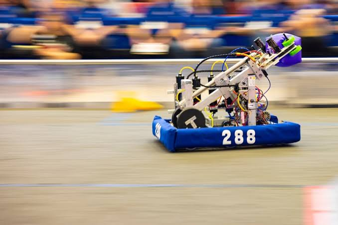
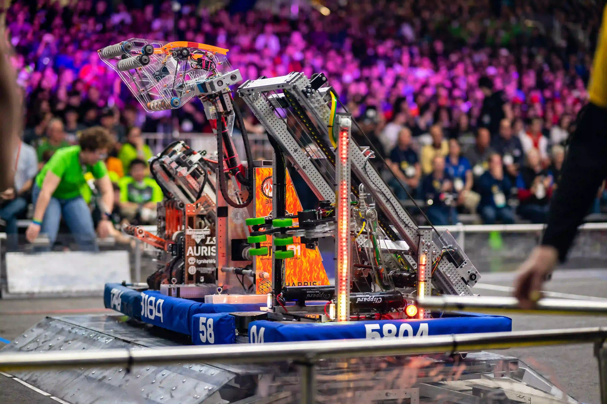

An overview of competitive robotics, including mechanical design, programming, and competitions.

Robotics competitions give students a chance to get hands on experience, learn about robotics, and apply this knowledge in a team setting that promotes collaboration. Teams design, build, and program robots to solve various challenges. Throughout the process, students learn to innovate and solve problems.
Competing also builds teamwork and communication skills. Members divide responsibilities, communicate their ideas, and work together under deadlines. Students join to explore engineering and programming, and can meet people with similar interests. The experience can also help them discover a possible passion/field.
A robot connects information from sensors, instructions from code, and movements from mechanical parts to complete specific tasks.
Sensors measure things such as distance, wheel rotation, or direction. During driver controlled periods, the robot can also receive commands from a handheld controller.
The robot's computer runs instructions written by the team prior to the competition. The code uses the sensor readings/driver commands to determine what the robot should do. These instructions are sent to the brain and converted into electrical signals
Motors turn the electrical signals sent by the brain into movement. Wheels, gears, arms, and other mechanisms use that movement to drive the robot and interact with game objects.
A person on the team sends commands through a controller while watching the match. The robot's code then translates those commands into actions.
The robot follows programmed instructions without live driver input. It uses sensor readings to adjust its actions as it completes a task.
